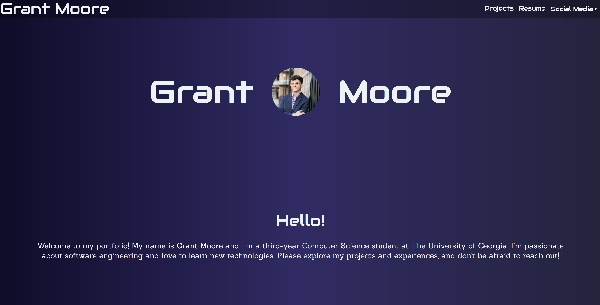
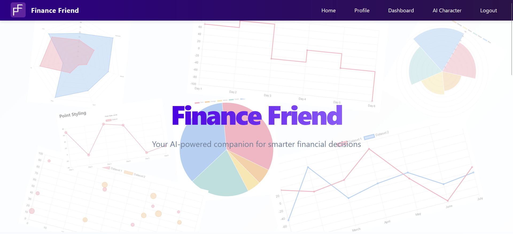

Education
- University of Georgia
- 3.3
- Bachelor of Computer Science
- May 2026
Honors and Awards
- Zell Miller Scholarship
- 2022-2026
- Student Alumni Council Member of the Year
- 2024
Skills
- HTML
- CSS
- JavaScript
- React
- C#
- Java
- C++
Leadership and Experience
- Software Developer Intern at CGI Inc.
- Summer 2025
- UGA Student Alumni Council Vice President of University Traditions
- 2025 - Present
- Research and Development Intern at Card-Monroe Corp.
- Summer 2023, Summer 2024
- UGA Student Alumni Council Member
- Fall 2022 - Present
- IT Intern at Card-Monroe Corp.
- Summer 2022
- Technology Intern at Catoosa County Public Schools
- May 2021 - May 2022
- IT Intern at Whitfield County Public Schools
- July 2020 - August 2020
Personal Portfolio Website

- Developed a personal portfolio website using React to showcase projects and skills.
- Implemented responsive and dynamic elements for sleek design patterns
- Integrated file embeds and social media links for enhanced connectivity.
Finance Friend

- Developed an AI Personal Finance helper that takes the style of pop culture icons
- Imports users bank statements and categorizes spending through intelligent processing
- Full-Stack application that allows user account creation and maintenance.
Our Bounds

- In-progress app that will allow users to dynamically share location with friends
- Privacy centered location tracking only shares location when user is in pre-designated zones
- Built using React, Node.js, Supabase, OpenStreetMap, and other tools.